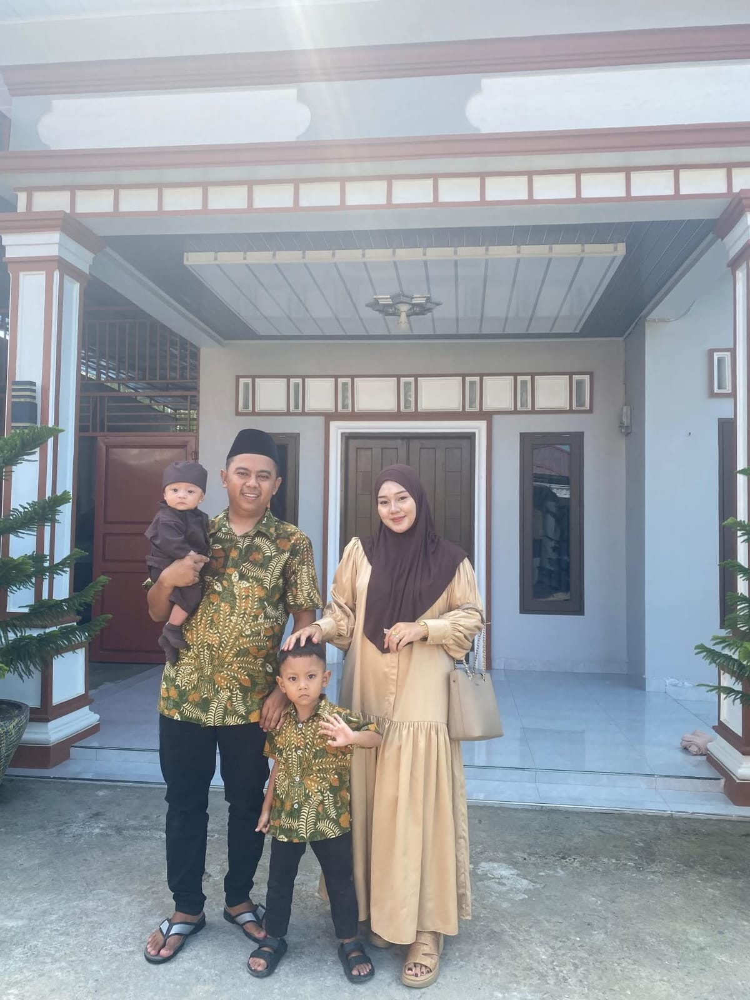
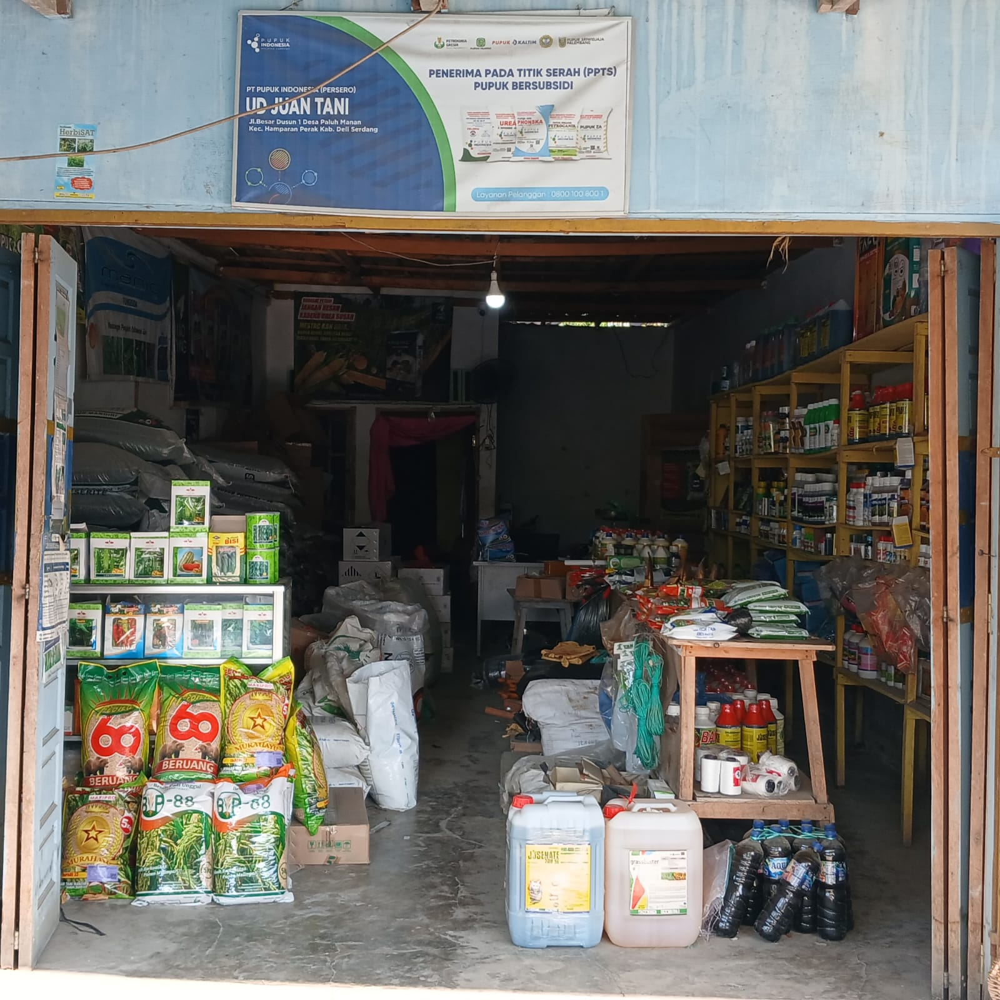
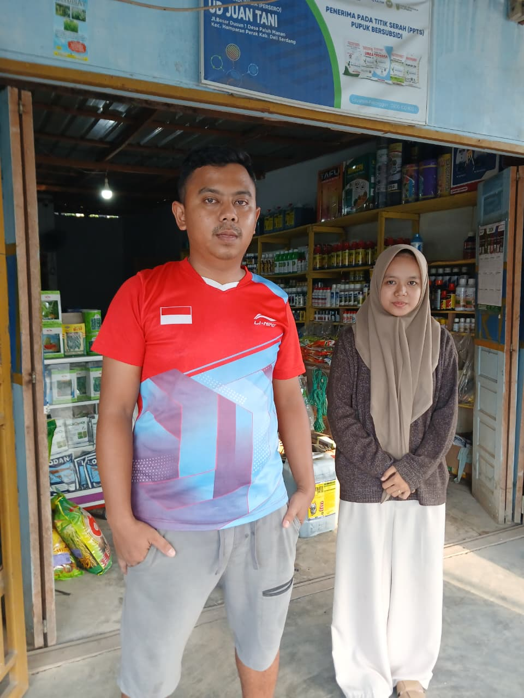

Mengenal lebih dekat sosok di balik UD. Juan Tani

Sebagai anak kedua, Khairul Rizwan, S.P, tumbuh di tengah keluarga yang selalu menomorsatukan pendidikan, meski hidup tidak selalu mudah. Demi melihat anaknya kuliah, kedua orang tuanya berjuang dengan segala cara, dan perjuangan itu tidak sia-sia, Khairul Rizwan berhasil lulus dan menyandang gelar Sarjana Pertanian. Gelar itu bukan sekadar pencapaian pribadi, tapi juga buah dari pengorbanan orang tua yang ingin melihat anaknya berhasil.
Berbekal ilmu yang ia dapat selama kuliah, Khairul Rizwan memilih untuk pulang dan melanjutkan usaha yang telah dirintis Abahnya dengan penuh kebanggaan. Ia membawa UD. Juan Tani ke arah yang lebih modern, namun tetap memegang erat nilai yang diajarkan sejak kecil yaitu jujur dalam berdagang dan selalu dekat dengan petani.
Kini, di tengah perjalanan usahanya, Khairul Rizwan punya alasan lain untuk terus melangkah, keluarga kecilnya. Bersama istrinya, Risma Adelia, dan dua putranya, Rafisqi dan Rakha, ia menjalani hari-harinya dengan rasa syukur atas semua yang sudah diperjuangkan hingga sejauh ini.
UD. Juan Tani berdiri sejak tahun 2014 dari sebuah toko kecil berukuran sepetak yang dirintis oleh Abah Khairul Rizwan dengan penuh perjuangan. Dari toko sederhana itulah benih, pupuk, dan kebutuhan pertanian lainnya mulai dikenal oleh para petani di masyarakat
Usaha ini sempat terhenti ketika sang Abah berpulang. Namun, semangat yang telah ditanamkan tidak ikut padam. Pada tahun 2019, Khairul Rizwan memutuskan untuk melanjutkan apa yang telah dirintis Abahnya, kali ini dengan membangun tempat usaha yang lebih besar dan lebih siap melayani kebutuhan petani
Sejak saat itu, UD. Juan Tani terus berjalan hingga sekarang. Bukan sekadar usaha jual beli, tetapi juga bentuk penghargaan Khairul Rizwan atas apa yang telah diperjuangkan Abahnya, sembari berharap usaha ini dapat terus bermanfaat bagi para petani di sekitarnya.

Menjadi toko pertanian terpercaya yang terus mendukung petani dalam mendapatkan produk berkualitas demi hasil panen yang melimpah dan kehidupan yang lebih sejahtera.
Dirancang dan dikembangkan dengan bekerja sama UD. Juan Tani.

NOVA HAFIDZA
Mahasiswi ITB Indonesia· 2026